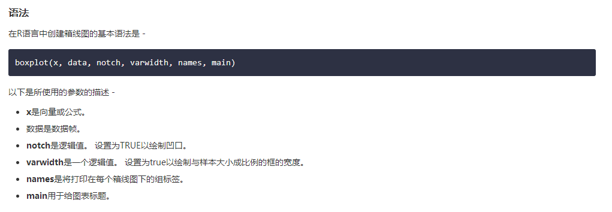

2）箱线图：
箱线图是数据集中的数据分布良好的度量。 它将数据集分成三个四分位数。 此图表表示数据集中的最小值，最大值，中值，第一四分位数和第三四分位数。 它还可用于通过绘制每个数据集的箱线图来比较数据集之间的数据分布。R语言中使用boxplot()函数来创建箱线图。

示例：
# Give the chart file a name.
png(file = "boxplot_with_notch.png")
# Plot the chart.
boxplot(mpg ~ cyl,
data = mtcars,
xlab = "Number of Cylinders",
ylab = "Miles Per Gallon",
main = "Mileage Data",
notch = TRUE,
varwidth = TRUE,
col = c("green","yellow","purple"),
names = c("High","Medium","Low")
)
# Save the file.
dev.off()